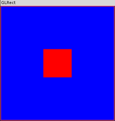

用OpenGL绘制形状
Table of Contents
1 代码
// GLRect.cpp // Just draw a single rectangle in the middle of the screen // OpenGL SuperBible, 3rd Edition // Richard S. Wright Jr. // rwright@starstonesoftware.com #include <GL/glut.h> // OpenGL 工具箱 /////////////////////////////////////////////////////////// // 绘制场景 void RenderScene(void) { // 用当前的清除颜色清除窗口 glClear(GL_COLOR_BUFFER_BIT); // 把绘图颜色设置为红色 // R G B glColor3f(1.0f, 0.0f, 0.0f); // 用当前颜色绘制一个填充矩形 glRectf(-25.0f, 25.0f, 25.0f, -25.0f); // 刷新绘图命令 glFlush(); } /////////////////////////////////////////////////////////// // 设置渲染状态 void SetupRC(void) { // 把清除颜色设置为蓝色 glClearColor(0.0f, 0.0f, 1.0f, 1.0f); } /////////////////////////////////////////////////////////// // 当窗口改变大小时由GLUT函数库调用 void ChangeSize(int w, int h) { GLfloat aspectRatio; // 防止被 0 所除 if(h == 0) h = 1; // 把视口设置为窗口的大小 glViewport(0, 0, w, h); // 重置坐标系统 glMatrixMode(GL_PROJECTION); glLoadIdentity(); // 建立裁剪区域（左、右、底、顶、近、远） aspectRatio = (GLfloat)w / (GLfloat)h; if (w <= h) glOrtho (-100.0, 100.0, -100 / aspectRatio, 100.0 / aspectRatio, 1.0, -1.0); else glOrtho (-100.0 * aspectRatio, 100.0 * aspectRatio, -100.0, 100.0, 1.0, -1.0); glMatrixMode(GL_MODELVIEW); glLoadIdentity(); } /////////////////////////////////////////////////////////// // 主程序入口 int main(int argc, char* argv[]) { glutInit(&argc, argv); glutInitDisplayMode(GLUT_SINGLE | GLUT_RGB); // glutInitWindowSize(800, 600); glutCreateWindow("GLRect"); glutDisplayFunc(RenderScene); glutReshapeFunc(ChangeSize); SetupRC(); glutMainLoop(); return 0; }
2 编译命令：
gcc GLRect.cpp -o a -lGL -lglut
3 输出

4 分析
4.1 绘制矩形
在前面，这个程序所完成的任务就是消除屏幕。现在，我们将增加下面这几行绘图代码：
// Set current drawing color to red // R G B glColor3f(1.0f, 0.0f, 0.0f); // Draw a filled rectangle with current color glRectf(-25.0f, 25.0f, 25.0f, -25.0f);
在这几行代码中，我们调用 glColor3f 函数设置了一种颜色，供以后的绘图（画线和填充）所用。然后，调用 glRect 函数绘制了一个填充矩形。
glColor3f函数选择了一种颜色，其方式类似于 glClearColor 函数。但是，我们不需要指定alpha成分（默认值1.0表示完全不透明）。
void glColor3f(GLfloat red, GLfloat green, GLfloat blue);
glRectf 函数接受浮点类型的参数（由后缀f表示）。这个函数名并没有提示参数的数量，因为所有的glRect变量都接受4个参数。glRectf函数的4个参数（如下所示）表示了两个坐标对：(x1,y1)和(x2,y2)。
void glRectf(GLfloat x1, GLfloat y1, GLfloat x2, GLfloat y2);
第一对坐标表示这个矩形的左上角，第二对坐标表示这个矩形的右下角。
OpenGL如何把这些坐标映射到实际的窗口坐标呢？这个任务就是由回调函数 ChangeSize 完成的。这个函数被设置为回调函数，每当窗口的大小改变（当它被拉伸、最大化等）时，它就会被调用。它是通过 glutReshapeFunc 函数设置的，与显示回调函数的设置方式相同。
glutReshapeFunc(ChangeSize);
4.2 窗口的缩放
一个非常小的窗口可能具有一个完整但非常小的绘图区域，而一个更大的窗口可能具有一个更大的类似绘图区域。在大多数绘图程序中，可以通过缩放窗口的大小来观察这个效果。对窗口进行拉伸通常并不会改变绘图区域的大小，但是会放大图像。
4.3 设置视口和裁剪区域
任何时候，当窗口的大小改变时，就需要重新设置坐标系统 。每当窗口的大小改变时，视口和裁剪区域必须重新定义，以适应新的窗口大小。
由于在各种不同的环境中，对窗口大小改变的检测和处理方式是不同的，因此GLUT函数库提供了一个 glutReshapeFunc 函数。这个函数注册了一个回调函数，当窗口的大小发生变化时，GLUT函数库就会调用这个回调函数。传递给glutReshapeFunc的回调函数的原型如下所示。
void ChangeSize(GLsizei w, GLsizei h);
我们选择ChangeSize作为这个函数的名称，在以后的例子里，我们将沿用这个名称。当窗口大小发生改变时，ChangeSize函数将接收到新的宽度和高度信息。我们使用x这个信息来修改我们的目标坐标系统，使之映射到真实的屏幕坐标。这个任务是在两个OpenGL函数的帮助下完成的： glViewport 和 glOrtho 。
4.4 定义视口
为了理解视口定义是如何实现的，让我们仔细观察ChangeSize函数。它首先调用 glViewport 函数，而窗口的宽度和高度则作为它的参数。
void glViewport(GLint x, GLint y, GLsizei width, GLsizei height);
x和y参数指定了窗口内部视口的左下角，width和height参数指定了视口的大小（以像素为单位）。通常，x和y都是0,但我们可以使用视口，在一个窗口的不同区域中渲染多个图形。视口 以实际屏幕坐标定义了窗口中的区域 ，OpenGL可以在这个区域中进行绘图。随后，当前的裁剪区域被映射到新的视口。如果指定了一个比窗口坐标更小的视口，则渲染区域就会缩小。
+ +-------------------------+ + +-------------------------+
| | | | | |
| | | | | |
| | glViewport(0,0,250,250) | | | glViewport(0,0,250,250) |
+ | | + | |
250 | | 250 +-----125----+ |
+ | | + | | |
| | | | | | |
| | | | | 125 |
| | | | | | |
| | | | | | |
+ +-------------------------+ + +-----------+-------------+
--------- 250 ------------- --------- 250 -------------
4.5 定义裁剪区域
ChangeSize函数的最后一个要求是对裁剪区域进行重新定义，使纵横比保持不变，窗口仍然维持在原来的正方形形状。纵横比就是垂直方向上有i个单位长度内的像素数量与水平方向上一个单位长度的像素数量之比。如果纵横比为1.0，那么它就表示一个正方形的纵横比。如果纵横比是0.5,那么水平方向上每个单位长度的两个像素对应于垂直方向每个单位长度上的一个像素。如果指定了一个非正方形的视口，并且映射到一个正方形的裁剪区域，图像就会发生扭曲。
在这个例子中，我们在裁剪区域中使用了正投影。用于创建这种投影模式的命令是 glOrtho 。
void glOrtho(GLdouble left, GLdouble right, GLdouble bottom, GLdouble top, GLdouble near, GLdouble far );
在3D笛卡儿空间中，left和right值指定了沿x轴的最小坐标值和最大坐标值；bottom和top值指定了沿y轴的相应值；near和far参数指定了沿z轴的相应值，负数表示朝着观察者的负方向远去。许多绘图和图形函数库使用窗口坐标（像素）来执行绘图命令，使用真实的浮点坐标系统用于渲染。
笛卡儿空间
| +y
|
| -- +z
| -/
|--/
-x -----------/------------ +x
--/ |
-/ |
-/ |
-z |
| -y
在使用 glOrtho 之前，注意下面这两个函数调用。
// Reset coordinate system glMatrixMode(GL_PROJECTION); glLoadIdentity();
投影矩阵就是实际定义可视区域的地方 。我们需要调用一次 glLoadIdentity 函数，因为 glOrtho 函数实际上并不建立裁剪区域，而只是修改原有的裁剪区域。它把描述当前裁剪区域的矩阵与参数所提供的裁剪区域矩阵相乘。现在，读者只需要知道调用 glLoadIdentity 函数的目的是在执行任何矩阵乘法操作之前对当前的坐标系统进行“重置”。如果没有这种“重置”，在 glOrtho 被调用之后，每次调用 glOrtho 时，都会导致目标裁剪区域被破坏，甚至导致矩阵无法显示。
下面这两行代码告诉OpenGL，以后所有的变换都将影响这个模型（即我们所绘制的图形）。
glMatrixMode(GL_MODELVIEW); glLoadIdentity();
4.6 使正方形保持正方
下面这些代码执行使“正方形”保持正方形状的实际工作。
// Establish clipping volume (left, right, bottom, top, near, far) aspectRatio = (GLfloat)w / (GLfloat)h; if (w <= h) glOrtho (-100.0, 100.0, -100 / aspectRatio, 100.0 / aspectRatio, 1.0, -1.0); else glOrtho (-100.0 * aspectRatio, 100.0 * aspectRatio, -100.0, 100.0, 1.0, -1.0);
裁剪区域（可视的坐标空间）进行了修改，使左边总是位于 x=-100，右边则扩展到 100，除非窗口的宽度大于高度。此时，水平范围就会根据窗口的纵横比进行缩放。类似地，底部总是从 y=-100 开始，向上扩展至 100,除非窗口的高度大于窗口的宽度。此时，垂直范围也会根据纵横比进行缩放。这样就可以保持一个200x200的正方形坐标区域（中心为(0,0)）与窗口的形状无关。